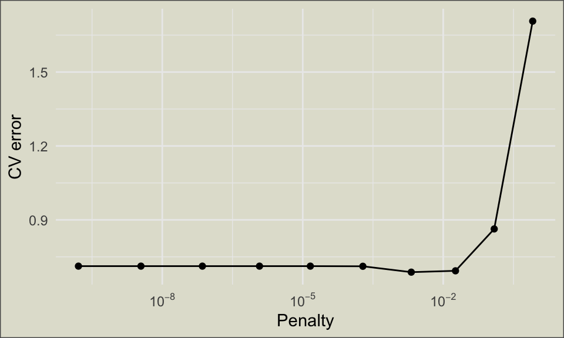
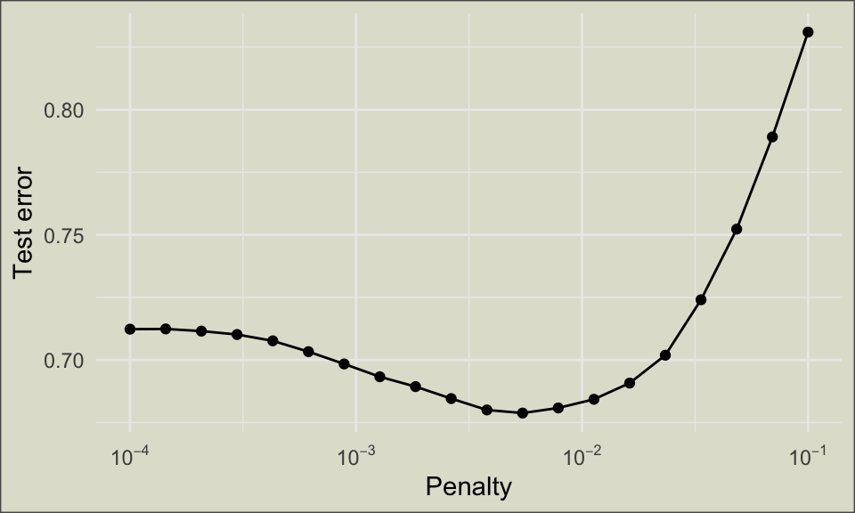
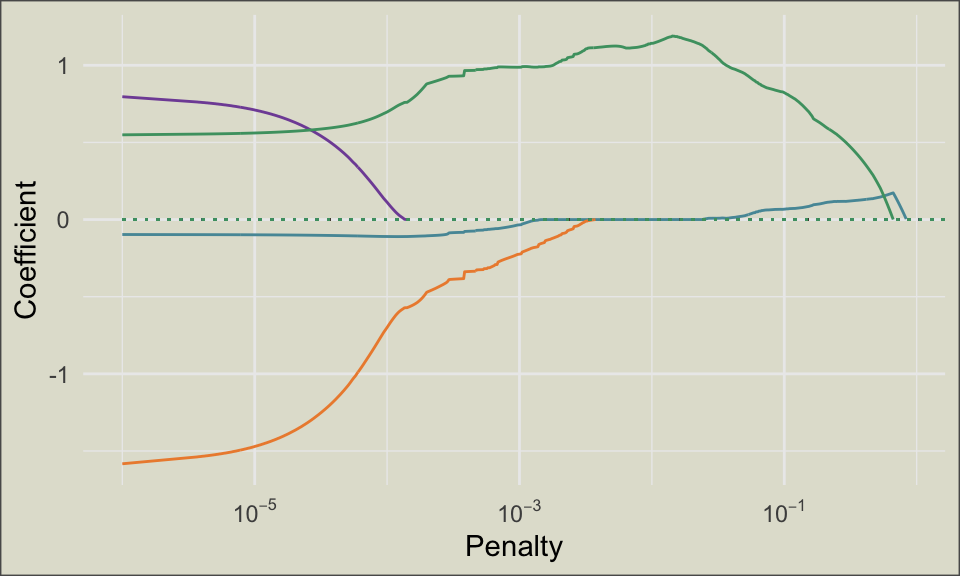

library(tidymodels)
library(AppliedPredictiveModeling)
data(solubility)
set.seed(0)
sol_train <- solTrainXtrans |>
mutate(solubility = solTrainY)
sol_test <- solTestXtrans |>
mutate(solubility = solTestY)Lasso regression using tidymodels
Machine learning
tidymodels
R-bloggers
Today I’m walking through the code used to produce results in my most recent vid, Stabilizing regression coefficients with the lasso.
The lasso addresses instability in linear regression models by penalizing larger coefficient values. For a conceptual introduction, check out my explainer here.
In this post, we’ll obtain a lasso model for solubility in chemical compounds using data from the AppliedPredictiveModeling package, which supports the excellent book of the same name. We’ll do this from the machine learning perspective using the tidymodels framework. If you haven’t worked with tidymodels before, I recommend pausing to check out my tutorial here.
The solubility data has already been split into training and testing sets, but in each case the explanatory and response variables have been stored separately. We start by resolving this.
The training set includes 951 observations while the test test includes 316. There are 228 total predictors available as we attempt to model the response variable, solubility.
Penalized regression in R is typically carried out using the glmnet() engine. Since we’re using tidymodels, we’ll rely on the linear_reg() wrapper, which standardizes the syntax of modeling functions like glmnnet() and ensures their output is compatible with the tools we’ll use for tuning and evaluation.
my_lasso <- linear_reg(
engine = "glmnet",
mixture = 1, # one for lasso, zero for ridge
penalty = tune() # lambda TBD
) Since there are no missing values in these sets and the variables are all numeric, little preprocessing needs to be done with this data. The following recipe (which standardizes all predictors and removes any with zero-variance) is added for consistency and clarity.
my_rec <- recipe(solubility ~., data = sol_train) |>
step_zv(all_predictors()) |>
step_normalize(all_numeric_predictors())
my_wf <- workflow(
spec = my_lasso,
preprocessor = my_rec
)Since the glmnet() engine performs standardization by default, step_normalize() turns out to be redundant here.
As a reminder, tidymodels separates model specification (accomplished here with linear_reg()) from model fitting (which we’ll do later). This allows us to incorporate preprocessing in a programmatic way, via a recipe, ensuring our steps will be applied consistently whether we’re working with the training set, the testing set, or something else entirely.
We determine the best choice for the penalty, \(\lambda\), using cross validation.
# create 5 separate 10-fold splits
folds <- vfold_cv(
sol_train,
v = 10,
repeats = 5
)
# tune using a default grid of values
tune_results <- tune_grid(
my_wf,
folds
)
glimpse(tune_results)Rows: 50
Columns: 5
$ splits <list> [<vfold_split[855 x 96 x 951 x 229]>], [<vfold_split[856 x 9…
$ id <chr> "Repeat1", "Repeat1", "Repeat1", "Repeat1", "Repeat1", "Repea…
$ id2 <chr> "Fold01", "Fold02", "Fold03", "Fold04", "Fold05", "Fold06", "…
$ .metrics <list> [<tbl_df[20 x 5]>], [<tbl_df[20 x 5]>], [<tbl_df[20 x 5]>], …
$ .notes <list> [<tbl_df[0 x 4]>], [<tbl_df[0 x 4]>], [<tbl_df[0 x 4]>], [<t…The output of tune_grid() is a copy of the object created by vfold_cv(), that is, a tibble with one row per fold per repeat. This one, however, includes an extra column, .metrics, which tracks the performance of models built with different \(\lambda\) values. Each element of tune_results$.metrics is itself a tibble.
# for example:
tune_results$.metrics[[1]]# A tibble: 20 × 5
penalty .metric .estimator .estimate .config
<dbl> <chr> <chr> <dbl> <chr>
1 1.62e-10 rmse standard 0.698 pre0_mod01_post0
2 1.62e-10 rsq standard 0.891 pre0_mod01_post0
3 3.51e- 9 rmse standard 0.698 pre0_mod02_post0
4 3.51e- 9 rsq standard 0.891 pre0_mod02_post0
5 7.19e- 8 rmse standard 0.698 pre0_mod03_post0
6 7.19e- 8 rsq standard 0.891 pre0_mod03_post0
7 1.19e- 6 rmse standard 0.698 pre0_mod04_post0
8 1.19e- 6 rsq standard 0.891 pre0_mod04_post0
9 1.45e- 5 rmse standard 0.698 pre0_mod05_post0
10 1.45e- 5 rsq standard 0.891 pre0_mod05_post0
11 1.92e- 4 rmse standard 0.697 pre0_mod06_post0
12 1.92e- 4 rsq standard 0.891 pre0_mod06_post0
13 2.08e- 3 rmse standard 0.659 pre0_mod07_post0
14 2.08e- 3 rsq standard 0.902 pre0_mod07_post0
15 1.83e- 2 rmse standard 0.633 pre0_mod08_post0
16 1.83e- 2 rsq standard 0.909 pre0_mod08_post0
17 1.23e- 1 rmse standard 0.801 pre0_mod09_post0
18 1.23e- 1 rsq standard 0.866 pre0_mod09_post0
19 8.15e- 1 rmse standard 1.77 pre0_mod10_post0
20 8.15e- 1 rsq standard 0.501 pre0_mod10_post0We can now plot performance versus penalty to visually estimate the best value of \(\lambda\).
rmse_path <- collect_metrics(tune_results) |>
filter(.metric == "rmse")
ggplot(rmse_path, aes(x = penalty, y = mean)) +
geom_point() +
geom_line()+
scale_x_log10(labels = scales::label_log()) +
labs(x = "Penalty", y = "CV error") +
theme_minimal() +
theme(
plot.background = element_rect(
fill = "#E1E1D3",
color = "#595959"
)
)
We can zoom in on the apparent minimum by specifying a data frame of penalty values for tune_grid() to work with. Since the search grid for \(\lambda\) must span several orders of magnitude, it’s best to specify it using a logarithmic scale, meaning that adjacent values will differ by the same factor rather than the same constant.
The grid can also be built using functions from the dials package, but for me this is usually more trouble than it’s worth.
# specify values
my_grid <- data.frame(
penalty = 10^seq(-4, -1, length.out = 20)
)
# repeat tuning and plotting
tune_results <- tune_grid(
my_wf,
folds,
grid = my_grid
)
rmse_path <- collect_metrics(tune_results) |>
filter(.metric == "rmse")
ggplot(rmse_path, aes(x = penalty, y = mean)) +
geom_point() +
geom_line() +
scale_x_log10(labels = scales::label_log()) +
labs(x = "Penalty", y = "Test error") +
theme_minimal() +
theme_minimal() +
theme(
plot.background = element_rect(
fill = "#E1E1D3",
color = "#595959"
)
)
Use show_best() to obtain a data frame of the best-performing hyperparameter values. Here we use root mean squared error to measure “best.”
show_best(tune_results, metric = "rmse")# A tibble: 5 × 7
penalty .metric .estimator mean n std_err .config
<dbl> <chr> <chr> <dbl> <int> <dbl> <chr>
1 0.00546 rmse standard 0.679 50 0.00708 pre0_mod12_post0
2 0.00379 rmse standard 0.680 50 0.00714 pre0_mod11_post0
3 0.00785 rmse standard 0.681 50 0.00690 pre0_mod13_post0
4 0.0113 rmse standard 0.684 50 0.00677 pre0_mod14_post0
5 0.00264 rmse standard 0.685 50 0.00731 pre0_mod10_post0Once we’re satisfied that we’ve found a good hyperparameter value, we can insert it into our model with finalize_workflow().
# manual specification (less common)
my_wf_final <- my_wf |> finalize_workflow(
parameters = list(penalty = .00546)
)
# automated specification (more common)
best_lambda <- select_best(tune_results, metric = "rmse")
my_wf_final <- my_wf |> finalize_workflow(best_lambda)
my_wf_final══ Workflow ════════════════════════════════════════════════════════════════════
Preprocessor: Recipe
Model: linear_reg()
── Preprocessor ────────────────────────────────────────────────────────────────
2 Recipe Steps
• step_zv()
• step_normalize()
── Model ───────────────────────────────────────────────────────────────────────
Linear Regression Model Specification (regression)
Main Arguments:
penalty = 0.00545559478116851
mixture = 1
Computational engine: glmnet A workflow is a set of instructions for building a model from data, not the model itself. To incorporate the training data and create an algorithm for making predictions, use fit(). To obtain model coefficients in a tibble, use broom::tidy().
my_wf_fit <- my_wf_final |>
fit(data = sol_train)
tidy(my_wf_fit)# A tibble: 229 × 3
term estimate penalty
<chr> <dbl> <dbl>
1 (Intercept) -2.72 0.00546
2 FP001 0 0.00546
3 FP002 0.110 0.00546
4 FP003 -0.0154 0.00546
5 FP004 -0.106 0.00546
6 FP005 0 0.00546
7 FP006 -0.0341 0.00546
8 FP007 0 0.00546
9 FP008 0 0.00546
10 FP009 0 0.00546
# ℹ 219 more rowsWhile predict() works perfectly well for applying a fitted model to new data, I often prefer another broom function: augment(). This returns a data frame that includes all relevant explanatory variables as well as the predicted values.
# predictions only
predict(my_wf_fit, new_data = sol_test) # A tibble: 316 × 1
.pred
<dbl>
1 0.599
2 0.168
3 -0.459
4 0.705
5 -0.0386
6 1.47
7 0.532
8 0.409
9 0.477
10 -0.555
# ℹ 306 more rows# add predictions to df
sol_test_aug <- augment(my_wf_fit, new_data = sol_test)
head(sol_test_aug)# A tibble: 6 × 230
.pred FP001 FP002 FP003 FP004 FP005 FP006 FP007 FP008 FP009 FP010 FP011
<dbl> <int> <int> <int> <int> <int> <int> <int> <int> <int> <int> <int>
1 0.599 1 0 0 1 0 0 0 0 1 1 0
2 0.168 1 0 1 1 0 1 0 0 0 0 1
3 -0.459 0 1 0 0 1 0 0 0 0 1 0
4 0.705 0 0 1 0 0 1 0 0 0 0 0
5 -0.0386 1 1 0 1 1 1 0 1 0 0 1
6 1.47 1 0 0 1 0 0 0 0 0 0 0
# ℹ 218 more variables: FP012 <int>, FP013 <int>, FP014 <int>, FP015 <int>,
# FP016 <int>, FP017 <int>, FP018 <int>, FP019 <int>, FP020 <int>,
# FP021 <int>, FP022 <int>, FP023 <int>, FP024 <int>, FP025 <int>,
# FP026 <int>, FP027 <int>, FP028 <int>, FP029 <int>, FP030 <int>,
# FP031 <int>, FP032 <int>, FP033 <int>, FP034 <int>, FP035 <int>,
# FP036 <int>, FP037 <int>, FP038 <int>, FP039 <int>, FP040 <int>,
# FP041 <int>, FP042 <int>, FP043 <int>, FP044 <int>, FP045 <int>, …This augmented data frame is particularly convenient when applying assessment functions like yardstick::rmse()
rmse(sol_test_aug,
truth = solubility,
estimate = .pred)# A tibble: 1 × 3
.metric .estimator .estimate
<chr> <chr> <dbl>
1 rmse standard 0.704On average, predictions made using this model miss true solubility by about .7 units.
Bonus #1: unpacking the recipe
A major advantage to tidymodels is the ease with which we can incorporate preprocessing steps like variable standardization. In the above analysis, for instance, we said which steps we wanted to carry out and then forgot all about them, never dealing with \(z\)-scores directly at all. In this section, we extract those transformed variables.
A recipe is a set of instructions for preprocessing data. On its own, it doesn’t take into account the training data or perform any transformations. To accomplish the former, use prep().
rec_prepped <- prep(my_rec)
rec_prepped── Recipe ──────────────────────────────────────────────────────────────────────── Inputs Number of variables by roleoutcome: 1
predictor: 228── Training information Training data contained 951 data points and no incomplete rows.── Operations • Zero variance filter removed: <none> | Trained• Centering and scaling for: FP001, FP002, FP003, FP004, ... | TrainedWe now hove a trained recipe. While previously we only had a generic instruction to compute \(z\)-scores using the formula \[z_{ij} = \frac{x_{ij} - \overline{x}_j}{s_j},\]
now sample means and standard deviations (\(\overline{x}_j\) and \(s_j\)) from the training set have been computed and incorporated into those instructions. This fact is indicated by the word “trained” at the end of the rec_prepped printout.
To obtain a tibble of transformed predictors, apply bake() to a trained recipe.
bake(rec_prepped, new_data = sol_train) |>
select(
HydrophilicFactor,
NumAtoms,
NumBonds,
SurfaceArea1
) # A tibble: 951 × 4
HydrophilicFactor NumAtoms NumBonds SurfaceArea1
<dbl> <dbl> <dbl> <dbl>
1 -1.11 0.423 0.528 0.0232
2 0.0110 1.62 1.63 0.676
3 0.0652 0.771 0.717 0.341
4 -1.84 0.267 0.245 -1.49
5 0.367 0.639 0.593 0.711
6 -0.477 0.706 0.593 -0.157
7 -0.669 0.896 0.998 0.479
8 -1.02 1.07 0.945 0.0392
9 0.608 1.90 1.88 1.09
10 0.734 1.01 0.998 0.434
# ℹ 941 more rowsWe could have just as easily applied this recipe to any other set with compatible variables, including the test set.
Bonus #2: plotting coefficient trajectories
It’s often useful to visualize the trajectories of model coefficients as the penalty increases. Since tune_grid() doesn’t retain model coefficients, some new code is needed.
# desired penalty values for plot
lambda_vals <- 10^seq(-6, 1, length.out = 1000)
# model specification. penalty=1 is a placeholder ignored by glmnet()
lasso_spec2 <- linear_reg(mixture = 1, penalty = 1) |>
set_engine("glmnet", path_values = lambda_vals)
lasso_wf2 <- workflow(
spec = lasso_spec2,
preprocessor = my_rec
)
lasso_fit <-
lasso_wf2 %>%
fit(data = sol_train)The output of fit() is an updated workflow object. In order to get model coefficients for each penalty value specified in lambda_vals, we use extract_fit_engine() followed by tidy().
glmnet_object <- lasso_fit |>
extract_fit_engine()
coef_paths <- tidy(glmnet_object)
coef_paths# A tibble: 130,284 × 5
term step estimate lambda dev.ratio
<chr> <dbl> <dbl> <dbl> <dbl>
1 (Intercept) 1 -2.72 10 0
2 (Intercept) 2 -2.72 9.84 0
3 (Intercept) 3 -2.72 9.68 0
4 (Intercept) 4 -2.72 9.53 0
5 (Intercept) 5 -2.72 9.38 0
6 (Intercept) 6 -2.72 9.22 0
7 (Intercept) 7 -2.72 9.08 0
8 (Intercept) 8 -2.72 8.93 0
9 (Intercept) 9 -2.72 8.79 0
10 (Intercept) 10 -2.72 8.65 0
# ℹ 130,274 more rowsFor neatness, let’s restrict our plot to just a few interesting variables.
vars <- c(
"NumBonds",
"NumAtoms",
"HydrophilicFactor",
"SurfaceArea1"
)
coef_paths |> filter(term %in% vars) |>
ggplot(aes(
x = lambda,
y = estimate,
color = term)
) +
geom_line() +
geom_segment(
x = -6,
y = 0,
xend = 1,
linetype = "dotted"
) +
labs(
x = "Penalty",
y = "Coefficient",
color = "Variable"
) +
scale_x_log10(labels = scales::label_log()) +
scale_color_manual(
values = c("#5798A6", "#ED8C3B", "#8050A5", "#4C9F70"
)
) +
theme_minimal() +
theme(
legend.position = "none",
plot.background = element_rect(
fill = "#E1E1D3",
color = "#595959"
)
)